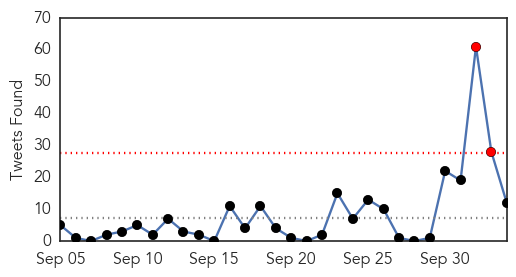
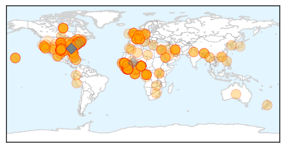
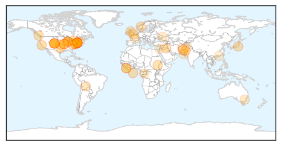

Ebola
30-Day Web Trend
2 alerts, 0 warnings

30-Day Twitter Trend
1 alerts, 0 warnings

Article Locations
Article Confidences

Top Articles:
- 1.000
- Texas Ebola patient worse, but still the only case among scores evaluated
- 1.000
- No D.C. area patients have Ebola, health officials say
- 1.000
- No D.C. area patients have Ebola, health officials say
- 1.000
- White House reassures public on Ebola scare
- 1.000
- CDC: What You Need to Know About Ebola
- 1.000
- NEW DETAILS: EBOLA Local hospitals prepare, Governor's statement
- 1.000
- The Montserrat Reporter
- 1.000
- Is Los Angeles Ready for Ebola?
- 1.000
- Russia's Responsive Contribution To Ebola Threat -
- 1.000
- Ebola preparations launched months ago in Vegas
- 1.000
- U.S. working on new screenings for Ebola but no travel ban
- 1.000
- U.S. working on new screenings for Ebola but no travel ban
- 1.000
- U.S. working on new screenings for Ebola but no travel ban
- 1.000
- Western Mass. hospitals prepare for Ebola
- 1.000
- Ebola outbreak: US patient in critical condition as authorities field scores of false reports of cases
- 1.000
- Health officials say Ebola in Phila. is conceivable
- 1.000
- No New Ebola Infections in Dallas
- 1.000
- D.C. patient tests negative for Ebola
- 1.000
- N.J. hospitals are well prepared to fight Ebola, state medical officials say
- 1.000
- 'No threat that Ebola is airborne'
- 1.000
- Washington DC-Area Hospital Admits Possible Ebola Case
- 1.000
- KFVS12 News & Weather Cape Girardeau, Carbondale, Poplar Bluff
- 1.000
- French Ebola Patient Recovers
- 1.000
- Washington DC-Area Hospital Admits Possible Ebola Case
- 1.000
- The Ebola outbreak and Boko Haram prove that different rules apply in Africa
- 1.000
- French Ebola Patient Recovers
- 1.000
- Two health workers in W. Africa cured of Ebola in Europe
- 1.000
- Ebola strikes fourth American in Liberia
- 1.000
- French nurse cured of Ebola
- 1.000
- The uninsured in U.S. raise Ebola risk
- 1.000
- 100 potential Ebola victims reported by hospitals on high alert for deadly virus
- 1.000
- Ebola Ruled Out for D.C. Patient
- 1.000
- Ebola Ruled Out for D.C. Patient
- 1.000
- Ebola patient in Germany cured, sent back home to Senegal
- 1.000
- Public health officials maintain eye on MERS, other illnesses amid Ebola alarm
- 1.000
- Ebola ruled out in two suspected cases in Washington region
- 1.000
- Ebola in Perspective
- 1.000
- Washington DC-Area Hospital Admits Possible Ebola Case
- 1.000
- NM health officials urge Ebola vigilance
- 1.000
- U.S. working on new screenings for Ebola but no travel ban
- 1.000
- Infectious disease experts: Communication key to containing Ebola virus
- 1.000
- Ebola threat in U.S., and we're not prepared to contain it, experts warn
- 1.000
- Dallas damage control: Ebola-positive man possibly infected 10 in Texas — RT USA
- 1.000
- First Ebola Case Diagnosed In The U.S. Confirmed In Texas: CDC
- 1.000
- How the world let Ebola spread
- 1.000
- How the world let Ebola spread
- 1.000
- Toronto hospital patient kept in isolation tests negative for Ebola
- 1.000
- Ebola strikes fourth American in Liberia
- 1.000
- Ebola outbreak: Eid celebrations subdued in West Africa
- 1.000
- TAKE A LOOK-World nations on alert to curb Ebola outbreak
Showing top 50 articles...
Top Tweets:
- 0.875
- There is no evidence that mosquitos or other insects can transmit Ebola virus.
- 0.833
- Bill Gates: “Ebola is shutting down healthcare systems” in countries hit by Ebola outbreak. http://t.co/hqU0mDrb4a
- 0.761
- Only mammals (ex. humans, bats, monkeys and apes) have shown the ability to become infected with and spread Ebola virus.
- 0.681
- Contact tracing finds new cases quickly so they can be isolated, stopping further spread of Ebola.
- 0.680
- We are monitoring contacts of the confirmed Ebola patient closely.
- 0.672
- says contact tracing crucial strategy in containing Ebola virus following first case in the US. http://t.co/hRDhReG4w7
- 0.652
- RT: RESPECT: 156 Cuban doctors & nurses landed 2 Oct in Sierra Leone to help stop Ebola! Cubans were faster than US army http:…
- 0.649
- RT: Contact tracing finds new cases quickly so they can be isolated, stopping further spread of Ebola.
- 0.618
- RT: We are monitoring contacts of the confirmed Ebola patient closely.
- 0.607
- Five people infected with Ebola every hour in Sierra Leone, says Save the Children http://t.co/xWasQAm48D
- 0.589
- Eid celebrations in Guinea dampened by Ebola outbreak http://t.co/IiFvKpbC2Q
- 0.564
- Lack of Qualified Staff Hurts Ebola Fight in Africa. http://t.co/bMZ1JcGYoM
- 0.553
- Many inquiries about possible Ebola cases, no new infections http://t.co/3MGt0i9KHv
- 0.544
- We are working hand in hand with local public health authorities in Dallas to protect the American public from Ebola.
- 0.536
- We can stop Ebola in its tracks in US w/ strong infection control and contract tracing.
- 0.519
- RT: We are working hand in hand with local public health authorities in Dallas to protect the American public from Ebola.
- 0.514
- Good liberia ebola article by: http://t.co/DKs7y25eNq
- 0.511
- RT: Urgent Call Out: Ebola Medical Fundraiser Meeting Weds 15th Oct 4pm at PCS HQ, 160 Falcon Road, London, SW11 2LN. RSVP bara…
- 0.506
- Frustration for woman quarantined after having close contact with first US Ebola patient. http://t.co/0OaP5pdS9Y
Unknown
30-Day Web Trend
0 alerts, 0 warnings

30-Day Twitter Trend
0 alerts, 0 warnings

Article Locations
Article Confidences
Top Articles:
- 0.995
- Jersey toddler Eli Waller dead from enterovirus 68 still a mystery
- 0.995
- Enterovirus' Role in NJ Child's Death Unclear: Officials
- 0.993
- Respiratory virus seen in 4 deaths Republican American
- 0.990
- B.C. reports two enterovirus cases in child and teen with polio-like symptoms
- 0.982
- One case of enterovirus 68 confirmed in Raleigh County, three more total across state
- 0.981
- New Jersey preschooler who died confirmed to have been infected by Enterovirus D68 as over 500 children across the country are diagnosed with the illness
- 0.976
- EV-D68 Reaches San Francisco, Five Cases of Enterovirus Infection Reported
- 0.971
- Enterovirus 68 kills N.J. boy
- 0.967
- NJ Preschooler's Death Blamed on Enterovirus 68
- 0.963
- What Parents Need to Know
- 0.963
- Health Department Denies Misinforming Cumberland School Officials on Enterovirus
- 0.960
- N.J. child dies, tests positive for enterovirus, while CHOP reports three cases of muscle weakness
- 0.951
- CDC: 4-Year-Old NJ Boy Who Died Had Enterovirus D68 « CBS New York
- 0.943
- NJ Child Died from Enterovirus D68: Officials
- 0.934
- CDC Confirms Hamilton, New Jersey Boy, 4, Died With Enterovirus D68 « CBS New York
- 0.918
- Health officials in B.C. urge parents to watch for signs of enterovirus now that kids in school
- 0.917
- Chicago Tribune
- 0.917
- Chicago Tribune
- 0.917
- Chicago Tribune
- 0.917
- Chicago Tribune
- 0.917
- Chicago Tribune
- 0.917
- Chicago Tribune
- 0.904
- Enterovirus D68 case confirmed in C-K
- 0.903
- Health officials won’t say what role enterovirus played in death of NJ 4-year-old
- 0.901
- Cluster of cases with polio-like symptoms baffles doctors
- 0.878
- New Jersey boy went to bed fine, didn’t wake up — due to enterovirus D68
- 0.876
- New Jersey district tracking sick students after child dies of enterovirus D68
- 0.866
- U.S. Ebola patient now in critical condition
- 0.866
- Two passengers escorted from Newark flight on Ebola concern
- 0.866
- At least four killed in suicide attack in Pakistan city of Quetta
- 0.863
- E. coli detected for the second time in water supply near Seattle
- 0.858
- N.J. preschooler died of enterovirus D68
- 0.848
- 'Fine' NJ boy dies suddenly of enterovirus D68
- 0.837
- Patient, healthcare worker treated for scabies at Dartmouth-Hitchcock Medical Center
- 0.827
- Winter vomiting bug closes seven wards in hospitals across Scotland
- 0.753
- Florence, KY Residents Suffering from Periodontal Disease are Invited to Explore the Benefits of Laser Gum Surgery with Dr. Ryan Estes
- 0.694
- NJ Preschoolers Death Attributed to Enterovirus D68
- 0.673
- Second Child to Receive Aggressive HIV Treatment Out of ‘Remission’ Growing Your Baby
- 0.661
- Save your sacrificial animals from ‘Congo Fever’
- 0.649
- Cumberland girl dies from infection associated with enterovirus
- 0.625
- NewsroomAmerica: World Europe
- 0.615
- Polio Cases In Pakistan Break 14-Year-Old Record As Militants Block Immunization
- 0.551
- 10 illegal water hydrants demolished
- 0.545
- In Pictures: Major Muslim, Jewish holidays coincide
- 0.545
- Pakistani Taliban pledges support for IS militants
- 0.545
- Hong Kong protesters, police face off after night of clashes
- 0.545
- Defying Hollande and France, ex-stepson to marry stepmum
- 0.539
- HIV/AIDS Origins Traced to Kinshasa
- 0.539
- HIV/AIDS Origins Traced to Kinshasa
- 0.503
- Water pipe bursts at Scunthorpe General Hospital
Showing top 50 articles...
Top Tweets:
- 0.537
- Operativo de la SENAD en Caaguazú: Un grupo operativo de la SENAD, con apoyo de helicópteros de la Armada Naci... http://t.co/cAanZrUesL